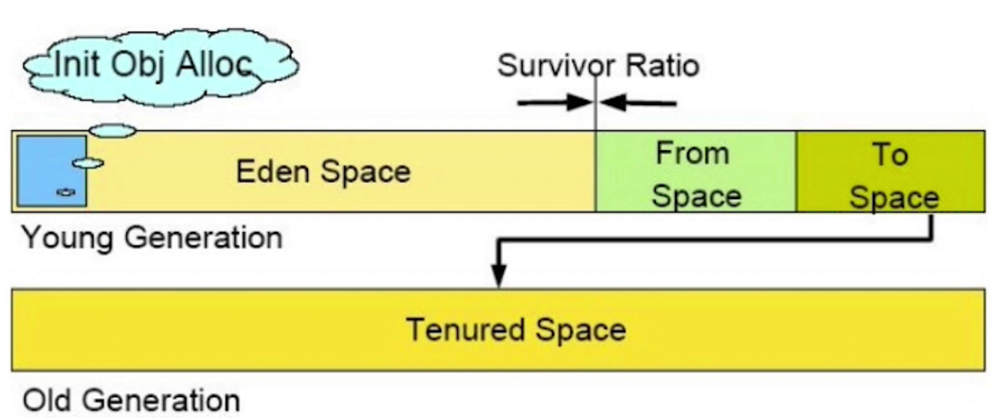

备注
Java9模块系统开发需要抽空了解一下
JVM概述
为什么需要学习jvm
（1）面试需要。衡量中高级开发人员技术储备
（2）更加深入理解。知其然还要知其所以然
一个类是如何装载到jvm的
它在jvm中是如何存储的
如何运行的
方法是如何调用的
运行时内存是怎么分配的
产生垃圾后是如何回收的
（3）排查解决故障的能力
内存溢出导致宕机了
cpu使用率居高不下
频繁卡顿
应用越跑越慢
（4）应用jvm对java应用和中间件调优
需要（如何）合理的分配内存
调整参数
选择GC垃圾回收器
对第三方中间件调优
jvm知识体系
- jvm知识导图
- java虚拟机知识框架图
jvm是什么
- JVM：Java Virtual Machine（java虚拟机）
- 虚拟机：通过软件模拟的具有完整硬件系统功能的、运行在一个完全隔离环境中的计算机系统
- jvm 是通过软件来模拟java的字节码指令集，是java程序的运行环境

jvm主要功能
（1）通过ClassLoader寻找和装载class文件
（2）解释字节码成为指令并执行，提供class文件的运行环境
（3）进行运行期间的内存分配和垃圾回收
（4）提供与硬件交互的平台
虚拟机是java平台无关的保障

jvm规范作用
- java虚拟机规范为不同的硬件平台提供了一种编译java技术代码的规范
- 该规范使用java软件独立于平台，因为编译是针对作为虚拟机的
一般机器而做 - 这个
一般机器可用软件模拟并运行于各种现存的计算机系统，也可用硬件来实现
jvm规范定义的主要内容
- 字节码指令集（相当于中央处理器cpu）
- class文件的格式
- 数据类型和值
- 运行时数据区
- 栈帧
- 特殊方法
- 类库
- 异常
- 虚拟机的启动、加载、链接和初始化
class文件格式概述
class文件是jvm的输入，java虚拟机规范中定义了，class文件的结构，class文件是jvm实现平台无关、技术无关的基础
1:class文件是一组以8字节为单位的字节流，各个数据项目按顺序紧凑排列
2:对于占用空间大于8字节的的数据项，按照高位在前的方式分割成多个8字节进行存储
3:class文件格式里面只有两种数据类型：无符号数、表
（1）无符号数：基础数据类型，以u1、u2、u4、u8来代表几个字节的无符号数
（2）表：由多个无符号数和其它表构成的复合数据类型，通常以_info结尾
类加载
概述
- 加载：查找并加载类文件的二进制数据
- 连接：将已经读入内存的类的二进制数据合并到jvm运行时环境中去，包含如下几个步骤
- 验证 ：确保被加载类的正确性
- 准备：为类的静态变量分配内存，并初始化它们
- 解析：把常量池中的符号引用转换成直接引用
- 初始化：为类的静态变量赋初始值
类加载要完成的功能
- 通过类的全限定名来获取该类的二进制字节流
- 把二进制字节流转化为方法区的运行时数据结构
- 在堆上创建一个java.lang.Class对象，用来封装类在方法区内的数据结构，并向外提供了访问方法区内数据结构的接口
加载类的方式
- 最常见的方式：本地文件系统中加载、从jar等归档文件中加载
- 动态的方式：将java源文件动态编译成class
- 其它方式：网络下载、从专有数据库中加载等等
类加载器
- 为什么要废除jdk1.8的扩展类加载器
- jdk1.8的扩展类加载器主要加载
jre/lib/ext下面的jar包，当我们想扩展功能的时候就把jar包放在下面。其实并不安全- jdk9想要扩展功能的时候，因为jdk9有了模块化开发，这种扩展机制就被模块化的天然扩展能力取代了
- 类加载器的关系

类加载器说明

1 | // 各种类加载器 |
1 | // 运行输出结果 |


双亲委派模型


破坏双亲委派模型

内存分配
JVM简化架构
PC（Program Counter）寄存器
（1）每个线程拥有一个PC寄存器，是线程私有的，用来存储指向下一条指令的地址
（2）在创建线程的时候，创建相应的PC寄存器
（3）执行本地方法时，PC寄存器的值为undefined
（4）是一块较小的内存空间，是唯一一个在jvm规范中没有规定OutOfMemoryError的内存区域
java 栈
- 栈是由一系列帧（frame）组成（因此java栈也叫做帧栈），是线程私有的
- 帧用来保存一个方法的局部变量、操作数栈（java没有寄存器，所有操作使用操作数栈）、常量池指针、动态链接、方法返回值等
- 每一次方法调用创建一个帧，并压栈。退出方法的时候退出栈顶指针就可以把栈帧中的内容销毁
局部变量表存放了编译期可预知的各种基本数据类型和引用类型，每个slot存放32位的数据，long、double两个槽位
优点：存取速度比堆快，仅次于寄存器
- 缺点：存在栈中的数据大小、生存期是在编译期决定的，缺乏灵活性
java堆
- 用来存放应用系统创建的对象和数组，所有线程共享java堆
- gc主要就管理堆空间，对分代gc来说，堆也是分代的
- 优点：运行期动态分配内存大小，自动进行垃圾回收
- 缺点：效率相对较慢

java堆的结构
新生代用来放新分配的对象，新生代中经过垃圾回收，没有回收掉的对象，被复制到老年代
老年代存储对象比新生代存储对象的年龄大的多
老年代存储一些大对象
- 整个堆大小 = 新生代 + 老年代
- 新生代 = Eden + 存活区
- 从前的持久代，用来存放Class、Method等元信息的区域，从jdk8去掉了。取而代之的是元空间（MetaSpace），元空间并不在虚拟机里面。而是直接使用本地内存
方法区
- 方法区是线程共享的，通常用来保存装载的类的结构信息
- 通常跟元空间关联在一起，但具体的跟jvm实现和版本有关
- jvm规范把方法区描述成为堆的一个逻辑部分，但它有一个别称Non-heap（非堆）。应是为了与java堆区分开
运行时常量池
- 是class文件中每个类或接口的常量池表，在运行期间的表现形式，通常包括：类的版本、字段、方法、接口等信息
在方法区中分配
通常在加载类和接口到jvm后，就创建相应的运行时常量池
本地方法栈
- 在jvm中用来支持native方法执行的方法栈就是本地方法栈
栈、堆、方法区交互关系
对象的内存布局
- 对象在内存中存在的布局（这里以HotSpot虚拟机为例来说明），分为对象头、实例数据和对齐填充
- 对象头分为两个部分：
（1）Mark Word：存储对象自身的运行数据，如：HashCode，GC分代年龄、锁状态标志等
（2）类型指针：对象指向它的类原数据的指针
- 实例数据：真正存放对象实例数据的地方
- 对齐填充：这部分不一定存在，也没有什么特殊含义。仅仅是占位符。因为HotSpot要求对象起始地址都是8字节的整数倍，如果不是就对齐
对象的访问定位
对象的访问定位在jvm中只规定了reference类型是一个指向对象的引用，但没有规定这个引用具体如何去定位，访问堆中对象的具体位置
对象的访问方式取决于jvm的实现。目前主流的有：使用句柄 或 使用指针两种方式
- hotspot采用的第二种
使用句柄
Java堆中会划出一块内存来作为句柄池，reference中存储句柄池的地址，句柄中存储对象的实例数据，和类元数据地址
使用指针
Java堆中会存放访问类元数据的地址，reference存储的就直接是对象的地址
Trace跟踪参数
打印gc的的简要信息：-Xlog:gc
打印gc的详细信息：Xlog:gc*
指定gc log的位置，以文件输出：-Xlog:gc:garbage-collection.log
每一次gc后都打印堆信息：-Xlog:gc+heap:debug
gc日志格式
gc发生的时间，也就是jvm从启动以来经过的秒数
日志级别信息和日志类型标记
gc识别号
gc类型和说明gc的原因
容量：gc前容量->gc后容量（该区域总容量）
gc持续时间，单位秒。有的收集器会有更详细的描述，比如：user标示应用程序消耗的时间。sys表示系统内核消耗的时间。real表示操作从开始到结束表示的时间
*java 堆的参数
-Xms 必须大于1MB，必须是1024的倍数
-Xmx 必须大于2MB，必须是1024的倍数
-Xms：初始堆大小，默认物理内存的1/64
-Xmx：最大堆大小，默认物理内存的1/4
一般 Xms 和 Xmx尽量配置一样，好处：避免每次gc后重新调整堆大小，减少内存开销
字节码执行引擎
执行引擎概述
- 功能基本就是输入字节码文件，然后对字节码进行解析并处理，最后输出执行结果
- 实现方式
（1）解释器直接解释执行
（2）通过及时编译器产生本地代码，编译执行。也可两者皆有
栈帧
- 栈帧是用于支持jvm进行方法调用和方法执行的数据结构
- 生命周期：栈帧随着方法创建而创建，方法结束而销毁
- 栈帧里存储了方法的局部变量、操作数栈、动态连接、方法返回地址等信息
局部变量表
- 用来存放方法参数和方法内部定义的局部变量的存储空间
（1）以变量槽slot为单位，目前一个slot存放32位以内的数据类型
（2）对于64位的数据，占用2个slot
（3）对于实例方法，第0位存放的是 this，然后从1到n依次分配给参数列表